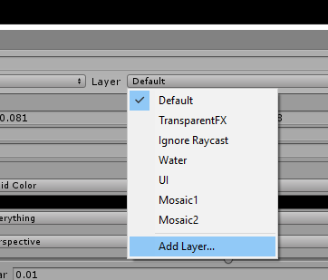
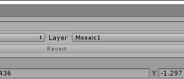

Setup
See "Test scene\Demo scene.unity" for an example.
- In the inspector, Layer -> Add Layer, and create a layer to mosaic.
 - Select your camera and add Component → Effects → Mosaix.
- Set "Mosaic Layer" to the layer you created.
- Put objects to mosaic in the new layer.
 - Play the scene.
Sphere masks
To use sphere masks, enable Sphere masking, and connect a 3D sphere to Masking Sphere. Place the sphere, and parent it correctly so it follows the object to be pixelated. Once the sphere is placed, disable its Mesh Renderer so the sphere isn't visible.
The sphere can be scaled and rotated to cover oblong areas. The Sphere Collider component should be deleted from the sphere, so objects don't collide with it.
Mask Fade can be set to fade the mosaic away smoothly outside the sphere. At 0, the mosaic cuts off sharply at the edge of the sphere.
Texture masks
To mask with a texture, enable Texture masking, and select a Masking Texture. White areas in the mask will be pixelated and black ones won't. The masking texture will use the same UVs as the models being rendered.This works best if the masking layer only contains a single object, since this only uses a single texture.
Anchoring
To use anchoring, connect a transform to Anchor, then enable Follow Anchor or Scale mosaic size.
If Follow Anchor is enabled, the mosaic lines follow the anchor as it moves around on screen.
If Scale mosaic size is enabled, the mosaic will also scale itself as the anchor gets further and closer to the camera. This allows the mosaic to be smaller when the object is far from the camera and finer as the object is closer to the camera.
Integrating with cartoon outline shaders
See DemoUnityChan.unity for an example of integrating toon shader outlines on top of the mosaic shader. The UnityChanSkinMosaic shader invokes the mosaic shader withUsePass "FX/Mosaix/MOSAIC".
A material using this shader is then assigned to Mosaic Material in place of
Mosaic.mat.
Multiple mosaics
To mosaic two objects separately, add a second Mosaix script to your camera, and use it with a separate layer. The objects won't bleed together, and can use different settings, such as a different number of mosaic blocks.
All settings
Mosaic Layer The display layer to mosaic.
Mosaic Blocks The number of mosaic blocks. Higher numbers give smaller mosaic blocks.
Masking/Texture masking If enabled, the mosaic will be masked using a texture.
Masking/Masking Texture If Texture masking is enabled, this is the texture to use as a mask.
Masking/Sphere masking If enabled, the mosaic will only display within a bounding sphere.
Masking/Masking Sphere If Sphere masking is enabled, this is the sphere to use as a mask.
Masking/Mask Fade If Sphere masking is enabled, this is how smoothly to fade out the mosaic outside the sphere.
Anchoring/Anchor A transform to use as a mosaic anchor, if desired.
Anchoring/Follow Anchor If enabled, the mosaic will follow the anchor around on screen instead of being fixed in place.
Anchoring/Scale mosaic size If enabled, the mosaic will get bigger as the anchor gets closer to the camera.
Advanced Settings/Shadows Cast On Mosaic Whether other objects cast shadows on the mosaic. Turning this
off may be faster, but may look wrong depending on your scene's lighting.
Advanced Settings/High Resolution Render A high-quality mode is used to render the mosaic.
This results in less flicker as objects move, more accurate lighting, and is required
for masking and alpha.
Advanced Settings/Alpha Fade out the mosaic. This can be animated to transition the mosaic on and off smoothly.
Advanced Settings/Render Scale How far to render offscreen for creating the mosaic. A value of 1.1 is
recommended.
Shaders/Mosaic Material The material to use when rendering the mosaic. This is usually Mosaix/Shaders/Mosaic.mat,
but can be set to another material to layer other effects on top of the mosaic.
Shaders/Resize Shader This should be set to Mosaix/Shaders/Resize.shader.
Shaders/Expand Edges Shader This should be set to Mosaix/Shaders/ExpandEdges.shader.
Limitations
Transparent objects aren't supported.